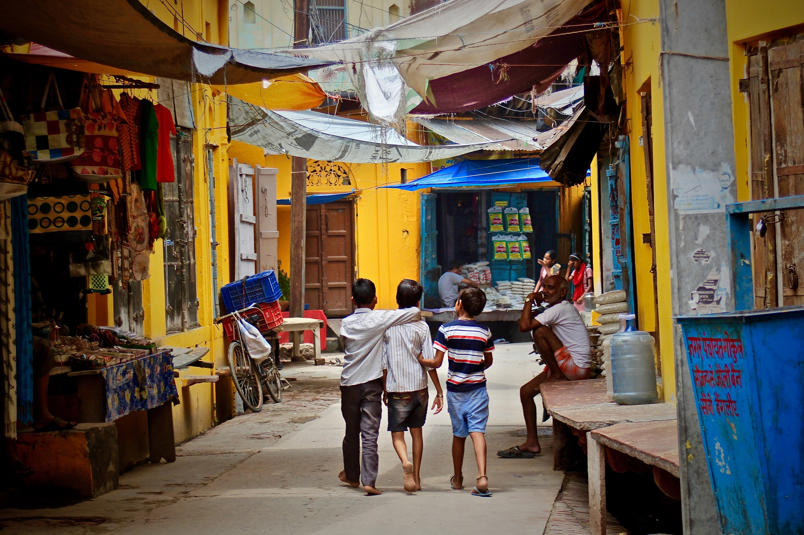
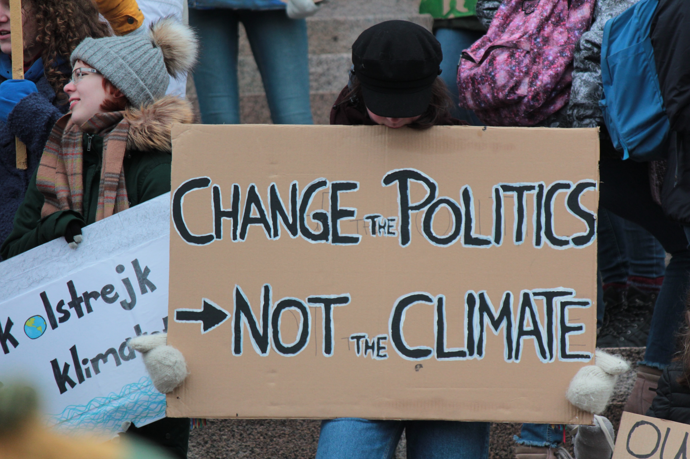
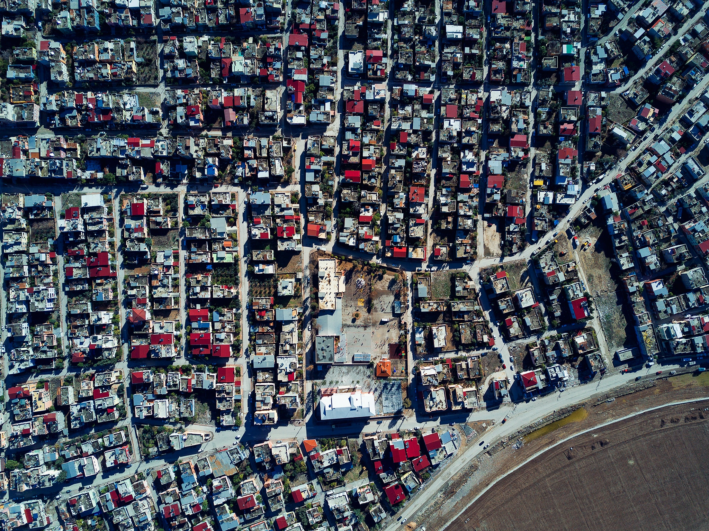
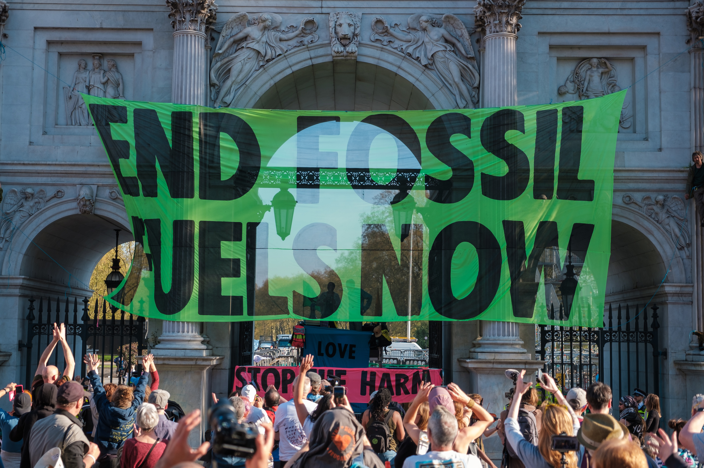
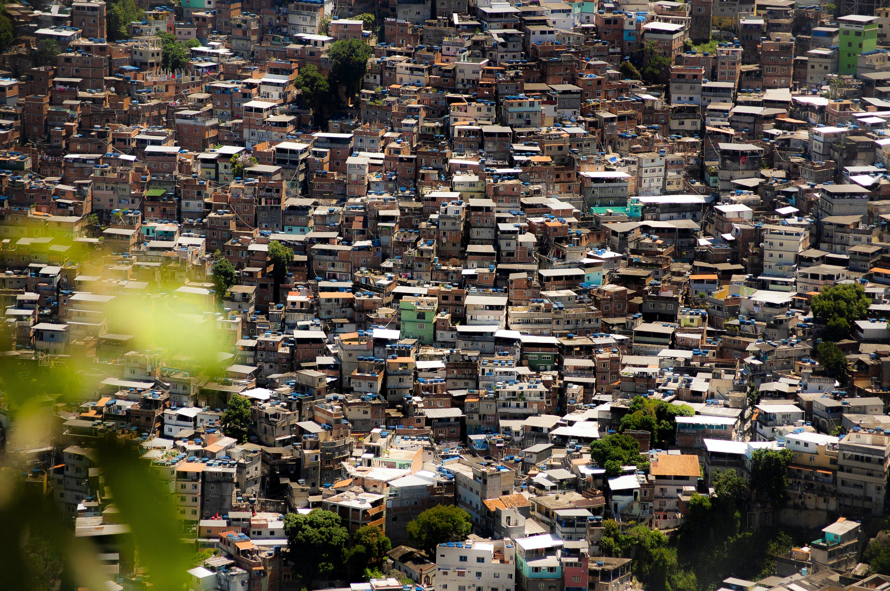

Climate literacy and pedagogy project for India
Creating next-generation of climate action leaders through pedagogy, adaptive learning and school-level teaching content development with Cambridge Zero and Cambridge University Press and Assessment.

Better public understanding of climate action
Investigating public attitudes towards climate action and science-related populism using a global survey instrument spanning 67 countries and ~75,000 people. The Cambridge work package is funded by the Quadrature Climate Foundation in partnership with Cambridge Zero, Cambridge Computer Laboratory, Harvard University and Caltech.

Responsible AI design for climate action
Envisioning a less-biassed and human-centric climate action AI trained on the knowledge of social tipping elements. Funded in part by the Quadrature Climate Foundation and the Google Cloud Climate Innovation Challenge 2022.

Heatwave resilience in the Anthropocene
Heatwaves are becoming more frequent and lethal due to climate change. This project is investigating how to measure heatwave impacts at the population level and design relevant adaptation policies and solutions, funded in part by the Quadrature Climate Foundation.
Climate technology interventions and conspiracy spillovers
Controversial geoengineering techniques like solar radiation management could be part of a future technology portfolio to limit global temperature change. We are investigating public attitudes towards such climate interventions using computational social science-based approaches. Partly funded by Quadrature Climate Foundation, Tony Crowling Foundation, Google Cloud Climate Innovation Challenge 2023 in partnership with the Centre for Climate Repair, Cambridge Judge Business School, Caltech HSS, and Twitter.

Climate misinformation and the fossil fuel industry
Does the fossil industry reframe climate and sustainability communications on social media platforms? We are investigating this question using multi-layered computational social science and AI approaches, funded in part by the Cambridge Judge Business School and the Quadrature Climate Foundation.

Distributive energy justice in low-income communities of Global South
Investigating distributive justice in shaping invisible drivers of energy in slums in India, Brazil, and Nigeria using computational social science and structural equation modeling, funded in part by the Bill and Melinda Gates Foundation and the Keynes Fund.